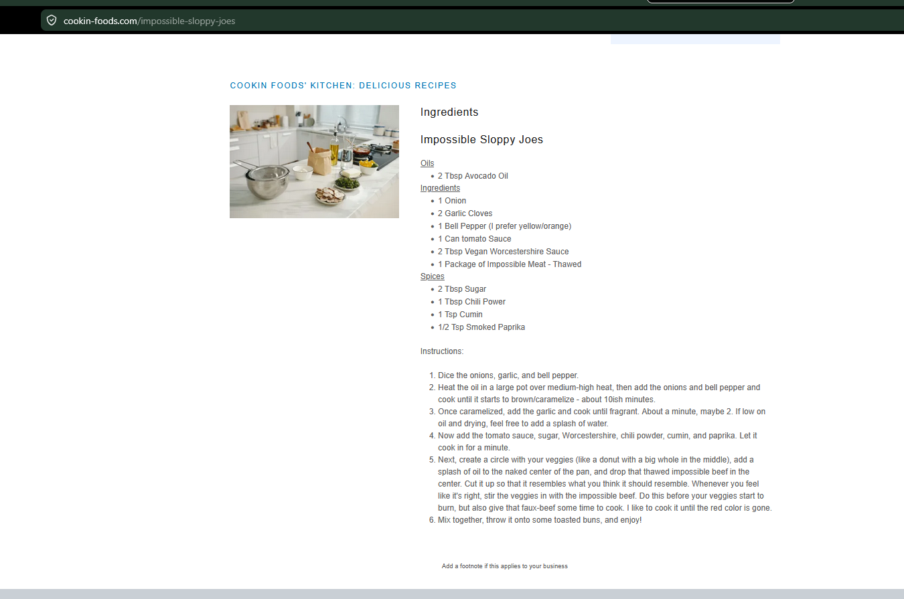

Meals
Impossible Sloppy Joes
Plant-based sloppy joes with peppers, onions, garlic, tomato sauce, and warm spices.
Ingredients
Base
- 2 tbsp avocado oil
- 1 onion, diced
- 2 garlic cloves, minced
- 1 bell pepper, diced
- 1 can tomato sauce
- 2 tbsp vegan Worcestershire sauce
- 1 package Impossible meat, thawed
Seasoning
- 2 tbsp sugar
- 1 tbsp chili powder
- 1 tsp cumin
- ½ tsp smoked paprika
Instructions
1
Prepare vegetables
Dice onion, garlic, and bell pepper.
2
Cook vegetables
Heat oil in a large pot over medium-high heat. Add onion and bell pepper and cook until caramelized, about 10 minutes. Add garlic and cook 1 minute.
3
Build sauce
Add tomato sauce, Worcestershire, sugar, chili powder, cumin, and smoked paprika. Let cook briefly.
4
Cook protein
Add impossible meat and cook until browned. Add a splash of water if it starts to dry out.
5
Serve
Spoon onto toasted buns and serve immediately.
Notes
- Cook the vegetables until they get color; that is where the flavor starts.